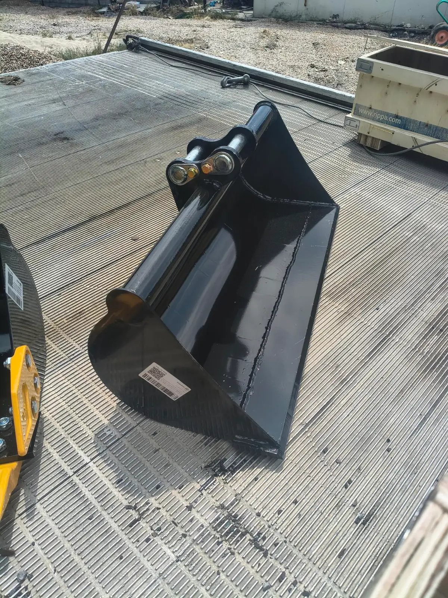

Кофа 80 см
Подравняване и терасиране с планировъчна кофа 80 см

Планировъчната кофа 80 см е за оформяне на двор, тераси, засипване на канали и разпределяне на хумус след изкопни работи.
Услуги
- Подравняване на неравен терен преди трева или настилка
- Терасиране на леки склонове
- Обратни насипи и засипване на канали
- Разпределяне на насипен материал на обекта (без доставка на материал от нас)
Предимство
Гумените вериги и ниското тегло пазят вече оформения двор — ключово за вили в Божурище и новите къщи около Костинброд.
Цена
В рамките на стандартния изкоп/планиране: 200–230 € / смяна. Ценоразпис.